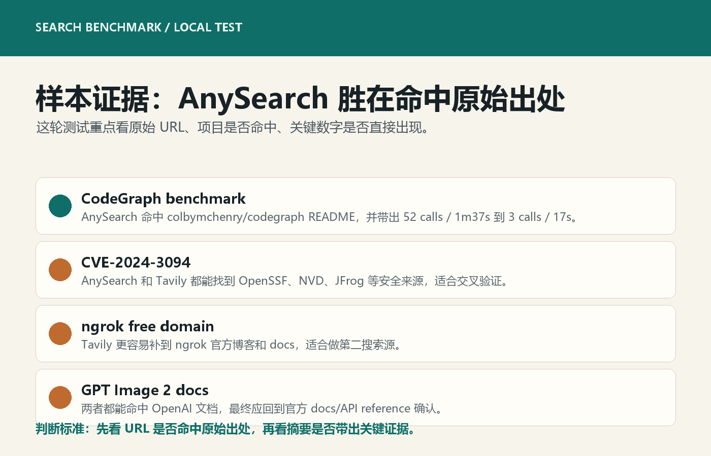

AnySearch / Tavily / Brave 实测：以后技术检索该怎么用
结论先放前面：以后做技术检索，AnySearch 应该放在第一搜索源，Tavily 做第二搜索源和交叉验证，Brave 等 API key 接好后再进入主流程，DeepSeek 只负责解释和压缩，不负责找原始出处。
这篇不是抽象比较“谁更聪明”，而是按真实 Agent 工作流去看：找 GitHub README、官方文档、参数表、benchmark 数字、CVE 原始出处时，谁更容易把人带到可靠来源。

总览图：四种工具在技术检索链路里的位置。
一、四种工具不要混着用
搜索、验证、解释、写作是四件事。把它们混在一个模型回答里，结果往往是看起来顺滑，但出处不稳。更稳的做法，是给每个工具固定角色。
AnySearch
强项：更适合找 GitHub README、官方 docs、开源项目、benchmark、参数表和 URL extract。它的价值是把 Agent 带到原始页面。
短板：中文结果偶尔会混入低质量页面；遇到重名项目仍然要加 owner/repo、官方域名或精确 URL。
建议位置：技术检索第一搜索源。
Tavily
强项：结构化 JSON 好处理，适合补充证据、网页摘要和 RAG 入口。
短板：answer 看起来完整，但重名项目时会被带偏；必须看 URL 是否命中同一个对象。
建议位置：第二搜索源和交叉验证。
Brave Search
强项：通用网页搜索生态完整，理论上适合补齐搜索结果。
短板：这次本机没有完整 API key，网页版又遇到 429，不能算严肃完整实测。
建议位置：等 BRAVE_SEARCH_API_KEY 接好后再进主流程。
DeepSeek Chat API
强项：适合解释搜索结果、压缩长文、总结差异、生成最终判断。
短板：不能访问实时网页，不应该被当成搜索引擎。
建议位置：搜索后的理解层，不放在找出处层。
二、关键样本：优势在“命中原始出处”

样本图：CodeGraph、CVE、OpenAI GPT Image 2、ngrok 等查询的命中差异。
CodeGraph benchmark：AnySearch 命中 `colbymchenry/codegraph` README，并带出关键表格；Tavily 则优先返回另一个同名项目，语义相关但对象偏了。
CVE-2024-3094：AnySearch 命中 OpenSSF、JFrog、NVD 等安全出处；安全类查询不能只看 summary，要优先抓官方、安全机构和供应商公告。
ngrok free static domain：Tavily 更容易补到官方博客和 docs，说明它适合作第二来源，尤其是产品功能类查询。
OpenAI GPT Image 2 docs：两边都能命中 OpenAI 文档和 API reference，但涉及 OpenAI 产品，最终仍应回到官方文档确认。
三、以后直接按这个流程跑

流程图：给其他线程最容易执行的搜索口令和验证顺序。
第一步：先用 AnySearch 找原始出处。目标是 README、官方 docs、GitHub、NVD、厂商公告和参数表，不是先要模型总结。
第二步：再用 Tavily 做交叉验证。重点看结构化结果是否支持同一结论，URL 是否命中同一个项目或同一份文档。
第三步：最后让模型解释。模型只处理已经拿到的证据：抽结论、比较差异、写文章、生成使用建议。
四、给其他 Agent 的口令
如果是非常具体的技术对象，再补一句：注意避免重名项目，查询里带 owner/repo、官方域名、包名或关键 benchmark 数字。
五、这次留下的边界
所以最终工作流不是“找一个最强工具”，而是把工具排成顺序：AnySearch 找出处，Tavily 交叉验证，模型解释和写作。